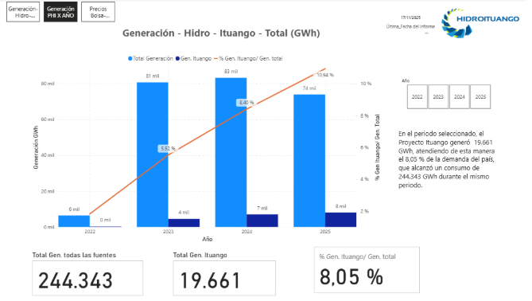
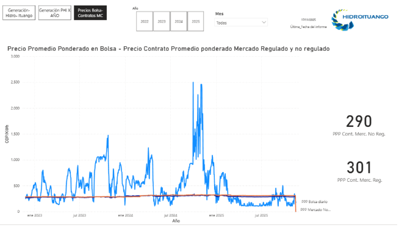
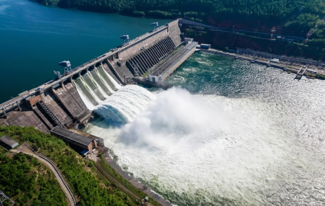
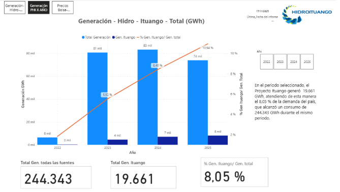
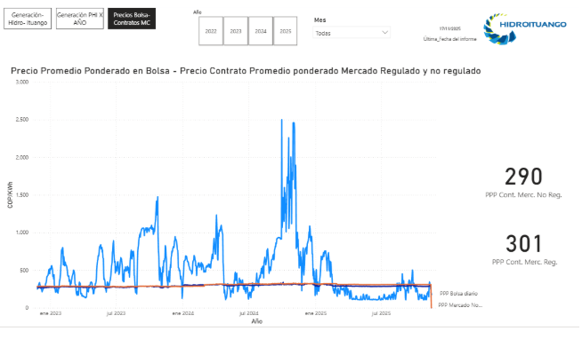
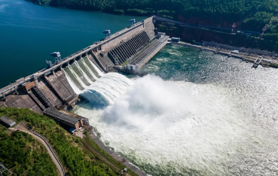
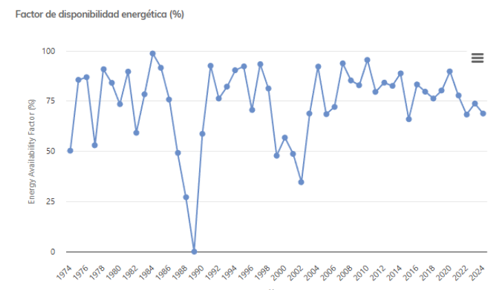
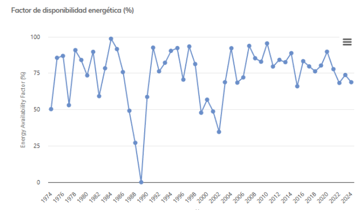

La generación eléctrica es un proceso fundamental para el desarrollo tecnológico y humano, ya que la electricidad se ha convertido en un recurso indispensable en la vida cotidiana y en la industria. Desde su descubrimiento, la capacidad de producir electricidad se ha convertido en una de las principales preocupaciones de la humanidad debido a que este se ha normalizado,a tal punto de volverse esencial in todos los ámbitos de la actividad humana. El consumo energético mundial ha experimentado un crecimiento exponencial, ya que mientras que en el año 1900 , el consumo energético apenas alcanzaba 0,7 teravatios, mientras que para el año 2005 se estimaba en aproximadamente 138.900 teravatios, reflejando así un incremento impulsado por la industrialización y el consumo de la sociedad. Esta creciente demanda ha conllevado a buscar eficientes formas de generación eléctrica, invirtiendo recursos para la producción, el transporte y la distribución de la energía. La corriente alterna ha sido clave para llevar electricidad a donde es necesario , acompañado de la construcción de vastas redes de transmisión y distribución. Sin embargo el acceso a este recurso ha sido y sigue siendo desigual, ya que mientras que los países industrializados son grandes consumidores , muchas regiones aún se enfrentan a limitaciones para tener acceso plenamente a los beneficios. Teniendo en cuenta lo anterior es importante destacar que la generación eléctrica debe adaptarse constantemente a la curva de la demanda, la cual varía según factores como las actividades industriales y los hábitos de consumo. En este contexto, comprender los conceptos de la generación eléctrica, que es lo que se verá reflejado en la información suministrada.
Conceptos Generales
¿Qué son las magnitudes eléctricas?
-
Tensión
Tensión Eléctrica (V): Similar a la presión del agua en un sistema de riego, la tensión determina la fuerza que impulsa el flujo de la corriente eléctrica entre dos puntos. Medida en voltios (V), es la "presión" que mueve los electrones a través de un conductor.
-
Corriente
Corriente Eléctrica (I): La corriente es el flujo de electrones, comparable al volumen de agua que fluye a través de un tubo. Dependiendo de la tensión y la resistencia, se mide en amperios (A), reflejando la cantidad de carga eléctrica que pasa por un punto en un segundo.
-
Resistencia
Resistencia Eléctrica (R): La resistencia es la oposición al flujo de corriente, análoga al estrechamiento en una manguera que dificulta el flujo de agua. Medida en ohmios (Ω), depende del material del conductor y de sus dimensiones, influenciando directamente en la cantidad de corriente que puede fluir.
-
Potencia
Potencia Eléctrica (P): La potencia representa la tasa en la cual la energía es suministrada o consumida en un circuito, similar a la velocidad con la que el agua es bombeada a través de un sistema de riego. Medida en vatios (W), indica la cantidad de trabajo realizado por segundo.
Generación eléctrica
¿Qué es un sistema de generación eléctrica?
La generación eléctrica es el conjunto de procesos mediante los cuales se produce energía eléctrica a partir de la transformación de las energías primarias, como la térmica, eólica, hidráulica, nuclear, solar u otras fuentes disponibles. El proceso de generación eléctrica puede realizarse mediante diversos sistemas y tecnologías , dependiendo del tipo de fuente utilizada. En todos los casos el objetivo principal es obtener electricidad de manera eficiente, segura y sostenible, garantizando el suministro energético para el consumo doméstico, industrial y comercial.
Generación eléctrica
¿Qué es?
Es la primera etapa del sistema eléctrico en la que se produce la energía eléctrica a partir de diversas fuentes,como la energía mecánica, térmica, química, nuclear, solar o eólica.
¿Dónde ocurre?
Este proceso se lleva a cabo en las centrales eléctricas, las cuales están diseñadas para aprovechar diferentes fuentes de energía.Los distintos tipos de centrales , son la térmica, la hidráulica, las nucleares, las eólicas y las nucleares.
¿Cómo funciona?
El proceso consta de varios pasos. En primer lugar, la fuente de energía debe convertirse en una forma que pueda utilizarse para generar electricidad. Si vamos a utilizar combustibles fósiles, tenemos que quemar el material ya mencionado para calentar agua y producir vapor. En el caso de las fuentes de energía renovables , lo que implica la utilización de la energía del viento, luz solar o el agua para hacer girar turbinas, una vez que se ha convertido en una forma utilizable , por lo general se acciona una turbina, conectado a un generador que produce energía eléctrica.
Transmisión de energía eléctrica
¿Qué es?
Es el proceso que permite transferir la energía obtenida en las centrales y transportarla a largas distancias hasta los centros de consumo. Existen líneas de transmisión de Corriente alterna que utilizan tres conductores para llevarla a larga distancia, y las líneas de transmisión de corriente continua usan dos conductores para transportar la corriente a larga distancia.
- Conductores: Son los que permiten el paso de la corriente eléctrica. Presenta poca resistencia al movimiento de energía lo que facilita su circulación. El número de conductores en la línea de transmisión dependerá de la cantidad de circuitos por fase.
- Líneas de transmisión: Cables que transportan la energía eléctrica a alta tensión.
- Torres o postes de transmisión: Estructura que soportan las líneas aéreas y cables de una línea de transmisión eléctrica.
- Aisladores: Elementos que evitan fugas de corriente y mantienen las líneas separadas de las estructuras metálicas.
- Transformadores: Equipos que modifican el nivel de voltaje de la corriente eléctrica.
Tipos de transmisión
- Líneas de baja tensión: ≤ 1 kV , Su distribución es a hogares, pequeños gobiernos o alumbrado público. Transportan poca potencia y cubren estancias cortas.
- Líneas de media tensión: De 1 kv a 35 kv, lleva la energía desde subestaciones hasta barrios o zonas industriales, puede ser aérea y subterránea en áreas urbanas.
- Líneas de alta tensión: De 35 kv a 230 kv, se usa para subestaciones regionales o grandes centros industriales, usan torres metálicas altas y cables gruesos de aluminio o cobre.
- Líneas de muy alta tensión: De 230 kv a 800 kv, es una transmisión a largas distancias entre zonas de generación y grandes centros de consumo.
- Línea de mayor tensión: (> 800 kv), Se usa para transmisión nacional o internacional en países con grandes distancias o demanda energética.
- Líneas aéreas: Se instalan sobre torres de acero o postes de concreto. Se usa en zonas rurales o interurbanas.
- Líneas subterráneas: Cables enterrados bajo tierra, protegidos con aislamiento especial. Se usa más que todo para centros urbanos, aeropuertos y hospitales.
- Líneas submarinas: Se colocan bajo el mar o ríos para conectar islas o países.
Distribución de energía eléctrica
¿Qué es?
Es la etapa final en el suministro de electricidad, se refiere al conjunto de cables subterráneos y los centros de transformación que permiten hacer llegar la energía al consumidor.
¿Cómo funciona?
Primero se hace una reducción de voltaje, donde los transformadores bajan la tensión de transmisión a un nivel seguro de distribución, la energía se transporta por las líneas de media tensión hasta barrios o zonas, se hace una reducción más de la tensión para uso doméstico, por último la energía eléctrica llega a donde estaba destinada.
Componentes del sistema de generación eléctrica
¿Qué es fuente de energía primaria?
Se trata de los recursos energéticos que surgen de la naturaleza y no han sido transformados.Estos se usan para obtener energía eléctrica.
Tipo de fuentes
- Fuentes renovables: Son las fuentes que se renuevan naturalmente en corto tiempo, y que no se agotan con su explotación. Ejemplo: agua, viento, sol, biomasa (materiales orgánicos), geotermia.
- Fuentes no renovables: Son las fuentes que se agotan y que proceden de los combustibles fósiles o de los materiales nucleares. Ejemplo: carbón, petróleo, gas, uranio.
Función
Está permitiría proporcionar la energía inicial necesaria para hacer funcionar las máquinas motrices (como turbinas o generadores) que posteriormente pondrían en funcionamiento el generador eléctrico para producir electricidad.
Sistema de generación eléctrica
¿Qué es?
Es el conjunto de las máquinas e instalaciones encargadas de la producción de la energía eléctrica a partir de otras formas de energía (como la mecánica, térmica, solar, eólica, etc.). Es la primera etapa del sistema eléctrico de potencia.
Función
Es transformar una fuente de energía primaria (agua, viento, sol, combustibles ...) en energía eléctrica que sea utilizable para hogares, industrias, comercios.
Equipos principales
- Fuente de energía primaria: el recurso natural del que se obtiene la energía (agua, viento, sol ...).
- Máquina motriz: la que convierte la energía primaria en energía mecánica (una turbina o un motor, por ejemplo).
- Generador eléctrico: el que convierte la energía mecánica en energía eléctrica.
- Sistema de control y protección: el que controla el funcionamiento y protege los equipos.
- Transmisión inicial: el que transporta la energía desde la planta hasta la red principal.
Generador eléctrico
¿Qué es?
El generador eléctrico es la máquina que convierte la energía mecánica en energía eléctrica por medio del principio de inducción electromagnética. Forma parte de los equipos principales del sistema de generación eléctrica.
Función
Su función es producir corriente eléctrica (alternada o continua) para alimentar redes eléctricas, industrias o equipos.
Principio básico
Se basa en el principio de la inducción electromagnética descubierto por Michael Faraday, que dice: Cuando un conductor se mueve en un campo magnético, se genera una corriente eléctrica en su interior. En un generador se tiene una bobina que gira en medio de un campo magnético (o viceversa) y entonces produce electricidad.
Componentes principales
- Rotor: Elemento que se moviliza y que da origen al campo magnético.
- Estator: Parte fija donde tiene lugar la corriente inducida.
- Carcasa: Protege las partes que se encuentran en el interior del generador.
- Escobillas y anillos rozantes (en algunos tipos): Permiten transferir corriente desde el rotor hacia el exterior.
- Sistema de excitación: Sirve para proporcionar la corriente que da origen al campo magnético.
Sistema de excitación
¿Qué es?
El sistema de excitación es el conjunto de mecanismos que proporcionan corriente continua (DC) al campo magnético del generador (rotor) para que pueda producir electricidad. Sin el sistema de excitación, el generador no podría crear el campo magnético que es necesario para inducir la corriente eléctrica en el estator.
Función
Proveer la corriente necesaria para la excitación del bobinado del rotor del generador. Regular el voltaje generado en función de la demanda; Proteger y estabilizar el sistema ante variaciones de carga o averías. En resumen: regula la fuerza del campo magnético y, en consecuencia, la energía eléctrica generada.
Tipos
- Excitación estática: Utiliza como parte del sistema a los rectificadores electrónicos (diodos o tiristores); No incluye partes móviles; Es rápida, moderna y requiere bajo mantenimiento.
- Excitación rotativa: Dispone de un pequeño generador auxiliar (denominado excitatriz) que genera corriente continua. Puede ser con escobillas: la corriente pasa a través de anillos rozantes. Sin escobillas: se vale de un sistema de diodos rotativos; sistema más seguro y duradero.
Transformadores elevados
¿Qué es?
El transformador elevado es un transformador eléctrico montado sobre poste o estructura elevada, que se utiliza como elemento de las redes de distribución, para bajar el voltaje de las líneas eléctricas y hacerlo seguro para el consumo doméstico o comercial.
Función
Consiste en transformar la energía eléctrica de media tensión -por caso 13.200 voltios- a baja tensión (120 o 240 V). Las características de un transformador, tal como podemos observar en la serie de esquemas del transformador, permiten que la electricidad llegue en condiciones seguras y estables hasta las casas, los negocios o las fábricas pequeñas (pero no a las grandes fábricas industriales, para cuya alimentación se utilizan transformadores de mayor voltaje, que transforman la energía eléctrica de baja tensión en media, o bien las irriga mediante el acoplamiento de las redes de baja tensión). En resumen: transformar la energía de la red en un voltaje adecuado, pero inadecuado para ser usado directamente por los usuarios finales.
Componentes principales
- Núcleo magnético: guía el flujo del campo magnético.
- Bobinas o devanados: Primario: recibe la energía de media tensión. Secundario: entrega la energía a baja tensión.
- Tanque: dentro del cual se contiene el aceite dieléctrico que aísla y enfría las bobinas.
- Aisladores: distancia eléctrica del transformador por estructura metálica o poste.
- Válvulas y respiraderos: permiten la salida de gases de forma y compensan la presión.
- Conectores y fusibles: protegen y conectan el transformador a la red eléctrica.
Sistemas de control y protección
¿Qué es?
El sistema de control y protección es el conjunto de dispositivos, sensores, autómatas y mecanismos con la función de supervisar, regular, controlar y proteger el estado de operación de generadores, transformadores y redes eléctricas.Su principal finalidad es mantener la estabilidad, evitar serios daños en los equipos involucrados y garantizar en todo momento un suministro eléctrico seguro y sin interrupciones.
Función
- Controlar variables eléctricas como voltaje, corriente y frecuencia.
- Proteger los equipos ante condiciones como fallas, sobrecargas e incluso cortocircuitos.
- Desconectar de forma automática alguna parte del sistema en caso de detectar algún tipo de anomalía.
- Garantizar el funcionamiento estable y eficiente del sistema de generación, transmisión y distribución.
Componentes principales
- Sensores y medidores: detectan variaciones de voltaje, corriente y frecuencia.
- Relés de protección: activan mecanismos de seguridad o al menos relaciones seguras del estado de las variables al ser detectadas dichas variaciones.
- Interruptores automáticos (breakers): abren el circuito cuando hay una sobrecarga o corto.
- Controladores automáticos: regulan la velocidad de las turbinas y la excitación del generador.
- Monitoreo remoto (SCADA): supervisan y controlan remotamente las plantas eléctricas, las subestaciones, las líneas de la red de distribución eléctrica.
Tipos de plantas de generación eléctrica
Centrales térmicas
Es una instalación donde se hace el proceso de generación de energía eléctrica a partir de energía térmica, generada al quemar combustible o mediante diversas fuentes de calor.
Funcionamiento
- El combustible se quema en una caldera para obtener calor.
- A partir de esa energía calorífica el agua que se transporta por la caldera se calienta y se va transformando en vapor de agua a alta presión.
- El vapor de agua se libera y acciona las palas de la turbina, que convierte esa energía térmica en energía mecánica de rotación, la que a su vez hace girar el alternador.
- El alternador o generador de corriente alterna transforma la energía mecánica de rotación en energía eléctrica, que se vierte en la red.
- La corriente eléctrica se genera a unos 20 mil voltios y se pasa a los transformadores para elevar la tensión hasta unos 400,000 voltios, para su posterior traslado hasta los puntos de consumo.
Características principales
- Utilizan combustibles fósiles o térmicos como fuente de energía.
- Son capaces de generar grandes cantidades de electricidad de manera continua.
- Producen emisiones contaminantes, dependiendo del tipo de combustible.
- Su funcionamiento se basa en el ciclo termodinámico.
Tipos de centrales termoeléctricas
1. Centrales termoeléctricas de carbón: Utilizan carbón mineral como combustible, es una de las más tradicionales y genera grandes cantidades de energía, pero también genera altas emisiones contaminantes.
Ejemplo: La central termoeléctrica Termotasajero es una de las principales plantas de generación a carbón en Colombia. Ubicada en el departamento de Norte de Santander. Termotasajero se compone de dos unidades: Termotasajero I y Termotasajero II. Cada unidad tiene una configuración independiente de caldera, turbinas y sistemas de control, lo que permite operación individual o conjunta según la demanda del sistema eléctrico.
- Tiene una capacidad total de 335 MW distribuidos en:
- Termotasajero I
Capacidad nominal: 163 MW
Capacidad neta reportada: 165 MW - Termotasajero II
Capacidad nominal: 186 MW
Capacidad neta efectiva: 170 MW - La capacidad de Termotasajero representa alrededor del 1,9% del total de la capacidad instalada del sistema interconectado nacional.
2. Centrales termoeléctricas del petróleo: Utilizan derivados del petróleo para generar calor, suelen utilizarse como centrales de respaldo o donde no se encuentra gas natural. Tienen costos de operación altos y un impacto ambiental considerable.
Ejemplo: Termocandelaria es una planta térmica localizada en el sector Mamonal de Cartagena. Cuenta con turbinas de gas de Westinghouse W501F. Usa el gas natural como combustible preferente o el diésel que es derivado del petróleo. Tiene una capacidad instalada de 314 MW (2 unidades de 157 MW c/u) y 566 MW tras el cierre de ciclo combinado con añadidos de 220-252 netos. Tiene una eficiencia térmica con un paso de 34% en un ciclo abierto a 50-53% en ciclo combinado. Tuvo una inversión entre US $232 M - US $258 M.
3. Centrales de ciclo combinado: Utilizan combustibles fósiles para generar energía eléctrica, pero emplean dos turbinas (una de gas y otra de vapor) que trabajan en conjunto para mejorar la eficiencia.
Ejemplo: TEBSA : Central termoeléctrica a gas natural (ciclo combinado)
Termobarranquilla SA Empresa de servicios públicos es una central térmica ubicada en Soledad, Atlántico en la costa norte de Colombia. La planta tiene la mayor capacidad de generación instalada en Colombia, con 918 MW. Su capacidad instalada es de 918 MW, en condiciones normales, más del 10% de la demanda nacional y el 50% de la demanda del Caribe colombiano.
La planta está constituida por un gran bloque de ciclo combinado, el cual está conformado por cinco turbinas de gas [GT11, GT12, GT13, GT21 y GT22] que operan con dos turbinas de vapor [ST14 y ST24], el cual tiene una capacidad de generación de 791 MW. La planta también cuenta con dos unidades a vapor que operan bajo un ciclo Rankine regenerativo. Estas unidades tienen una capacidad de generación declarada de 64 MW la unidad 3 y 63 MW la unidad 4.

- La disponibilidad real significa que la planta estuvo disponible para generar energía el 98.96% del tiempo.
- El factor de utilización indica el porcentaje de la capacidad máxima realmente usado, si TEBSA puede generar un 100%, la planta estuvo generando menos de la mitad de su capacidad máxima.
- La generación es la cantidad de energía eléctrica que TEBSA produjo durante el mes de septiembre del 2025.
- El consumo de gas fue la cantidad de gas natural que consume la termoeléctrica durante el mes ya mencionado. Las unidades GBTU significan Giga British Thermal Units, unidad de medida de energía presente en el gas.
- Consumo TEBSA/consumo de gas de plantas en Colombia significa que TEBSA solo consumió el 37.39% (dato consignado en la imagen) del gas total por todas las termoeléctricas del país.

Centrales hidroeléctricas
Centrales hidroeléctricas
Son instalaciones que utilizan la energía del agua en movimiento para generar electricidad. Se transforma la energía potencial y la energía cinética del agua en energía mecánica y luego en energía eléctrica.
Funcionamiento
- Se encuentra un lugar estratégico donde se puede captar una gran cantidad de agua en movimiento. Esto se hace mediante una represa que controla el flujo de agua.
- El agua se dirige por un canal de conducción que guía el agua hasta la central hidroeléctrica.
- El agua llega a unas turbina hidráulicas a través de la tubería que se activan con el flujo del agua.
- Las turbinas están conectadas a los generadores que se llaman alternadores, que hacen que se produzca electricidad cuando el agua hacer girar turbinas hidráulicas.
- La electricidad que se genera primero es corriente alterna, la cual suele tener voltaje bajo, por lo que se usa un transformador para aumentar el voltaje y adecuarlo para la transmisión a larga distancia.
Características
- Funciona con el recurso natural agua que se renueva en un ciclo hidrológico.
- Es una de las fuentes más eficientes.
- Necesitan un río caudaloso, una caída de agua o un embalse que permita generar suficiente presión.
- Su infraestructura externa incluye: presa, conductos forzados, turbinas, generadores, transformadores y canales de desagüe.
- Se puede controlar cuánta energía producen abriendo o cerrando compuertas según la demanda eléctrica.
- Proporciona energía estable.
- Requiere una gran inversión, pero su mantenimiento es relativamente bajo.
- Tiene una larga vida útil con un funcionamiento entre los 50 y 100 años con buen mantenimiento.
- No producen gases contaminantes durante su operación, es considerado energía limpia.
Tipos de centrales hidroeléctricas
Centrales de agua fluyente: Utilizan el flujo constante de agua de ríos o arroyos, sin usar embalses, el agua se deriva mediante un canal y se dirige por una tubería hasta una turbina que genera electricidad. Operan de forma continua porque no tiene capacidad de almacenar agua al no disponer de embalse. Las turbinas pueden ser de eje vertical cuando el río tiene una pendiente fuerte y horizontal cuando la pendiente del río es baja.
Ejemplo
PCH el Edén, es una central hidroeléctrica de agua fluyente, se encuentra en el río La Miel, una cuenca en el oriente del departamento de Caldas, municipios como Pensilvania, Marquetalia y Manzanares. Tiene una potencia instalada nominal de 19.9 MW y funciona con dos turbinas de Pelton.
Tiene una conducción de agua de 6.7 km desde la captación hasta la casa de máquinas con una caída de 430 m.
Se reporta una generación anual aproximada de 27,2 GWh.
Central de embalse
Se utiliza un embalse para almacenar agua e ir graduando el caudal que pasa por la turbina. Para esto se requiere una inversión mayor.
Es la mayor central de embalse en Colombia, ubicada en el sector Mambita, municipio de Ubalá. Tiene una capacidad instalada de aproximadamente 1260 MW distribuida en cinco unidades, con un embalse de gran volumen que le da capacidad de regular caudales y generar energía firme para el sistema interconectado nacional.
El embalse permite almacenar agua y generar de forma más constante, el salto y turbinas Pelton permiten gran cantidad de potencia.
Tiene una generación media anual de 5700-5900 GWh/año, su embalse es de 950 millones m³, la altura de la presa es de 243 m y el salto nominal es de 1100.
 





 
